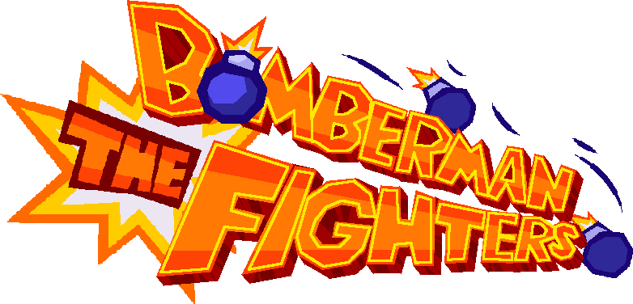

This is a free/non-profit fan-game. Bomberman is © Konami. Please support official releases.
+ Launching/Scorching fist move for Shirobon and Kurobon. Both characters execute this move differently from each other.
+ Wake-up kick, wake-up low kick, and quickstand.
+ Side rolling while laying.
+ Throw attacks.
+ Animations for player hit while airborne.
* Improved character models.
* Wake-up kick, wake-up low kick, and quickstand.
* Improved left/right punch animations.
* Fixed random character select for players not playing when time is up.
* Fixed character select not opening after confirming character in online play.
* Fixed players sometimes playing walk animation at start of new round.
+ Character select.
+ Guarding. Stand still or move backwards.
+ Left/Right uppercut moves.
+ Spring kick and rising cross chop moves.
+ Music for main menu.
+ Pause toggle.
+ Facial expressions.
+ Press START to join offline play. (In preparation for future CPU player system!)
* Updated online menu background.
* Increased buff time for inputs.
+ Online play. Play with your friends online!
+ Bomb attacks, check inputs guide.
+ Textures for Shirobon/Kurobon
+ Player health.
+ Gameplay UI
+ New UI text font. (Credit to @somepx from Itch.io!)
+ Round system. Win enough rounds to win the whole game!
+ Sound and music.
* Removed frame cap.
* Fixed/improved combo system.
+ Stage system. Currently there's only one stage made for testing, prettier stages will come over time!
+ Placeholder menus.
+ New character models.
* Polished animations.
* First indev build release. Enjoy!